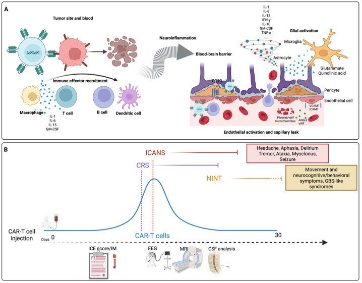
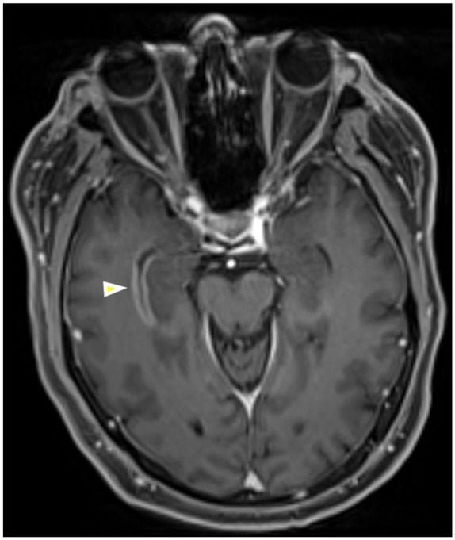
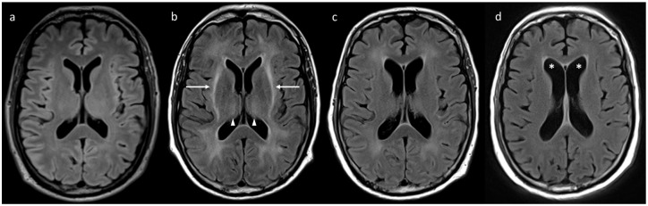
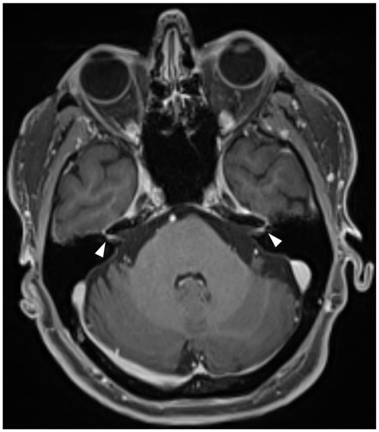
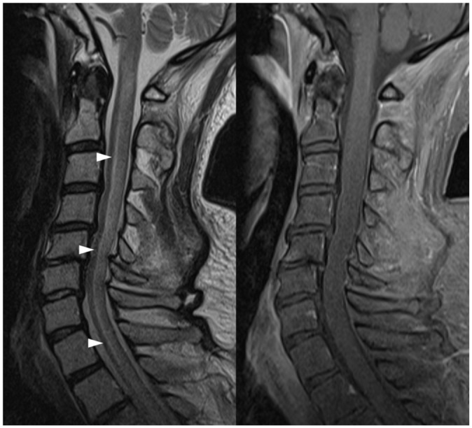

1430 — Độc tính thần kinh sau liệu pháp tế bào CAR-T (ICANS) / Immune effector cell-associated neurotoxicity syndrome
Tags: pattern:benh-nao-lan-toa pattern:ton-thuong-chat-trang pattern:han-che-khuech-tan pattern:vi-xuat-huyet vung:nao vung:chat-trang vung:tuy-song score:ASTCT-ICANS score:ICE protocol:MRI-DWI protocol:MRI-SWI protocol:EEG protocol:choc-DNT
Mức chắc chắn (certainty): tổng hợp y văn (literature synthesis) — ghép 2 tổng quan 2026 về hình ảnh/sinh lý bệnh (Lasocki A và cs., Ther Adv Neurol Disord 2026, PMC12796132, CC BY-NC 4.0; Pagliuca S và cs., cùng tạp chí 2026, PMC13180172, CC BY-NC 4.0) với 2 tổng quan thực hành (Kim J., Blood Res 2026, PMC13558536, CC BY-NC-ND 4.0; Alesefir W và cs., Front Neurol 2026, PMC13714708, CC BY 4.0). Các tỉ lệ dưới đây là số tổng hợp từ các tổng quan này dẫn lại nghiên cứu gốc; chỗ nguồn không đưa con số thì ghi "chưa rõ", không bịa.
Bài này trả lời 4 câu hỏi của buổi trực sau truyền CAR-T: (1) Bệnh nhân lú lẫn/thất ngôn ngày 3–6 sau truyền — ICANS hay nhiễm trùng/đột quỵ? (2) MRI bình thường có loại trừ ICANS không? (3) Chấm độ nào và khi nào dùng corticoid, khi nào KHÔNG dùng tocilizumab? (4) Co giật, phù não, yếu chi, liệt mặt — dấu hiệu nào đổi xử trí ngay? Khác với 1423 – độc tính methotrexate nội tủy (tổn thương chất trắng do thuốc hóa trị, không có “cơn bão cytokine”) và 494 – MTX leukoencephalopathy: ICANS là hội chứng viêm nội mạch–hàng rào máu não do tế bào miễn dịch hoạt hóa, có thang độ riêng và điều trị miễn dịch riêng.
1. Tổng quan bệnh học – cơ chế hình ảnh
1.1 Sinh lý bệnh: từ “bão cytokine” đến hàng rào máu não

- Sau khi CAR-T gắn kháng nguyên và giết tế bào u, một đợt bùng phát cytokine hệ thống (IL-1, IL-6, IFN-γ, TNF-α, GM-CSF, IL-10, IL-15) xuất hiện, kèm vòng khuếch đại tuỷ xương (bạch cầu đơn nhân/đại thực bào tiết IL-1 và IL-6).
- Cytokine tác động lên đơn vị mạch–thần kinh (neurovascular unit): tăng tỉ lệ Ang-2/Ang-1, giải phóng vWF, tăng ICAM-1/VCAM-1, MMP và VEGF → hoạt hóa nội mô, tăng tính thấm mao mạch, rò rỉ hàng rào máu não (BBB) và hàng rào máu–dịch não tủy (BCSFB).
- Trong não, tế bào hình sao và vi bào đệm hoạt hóa, giải phóng glutamate và acid quinolinic → kích thích độc thần kinh (excitotoxicity); đồng thời huyết khối vi mạch do tiểu cầu/vWF hình thành.
- Một cơ chế đặc thù: CD19 có thể biểu hiện trên tế bào quanh mạch (pericyte) và cơ trơn mạch máu não → CAR-T CD19 có thể tấn công trực tiếp thành mạch, làm hàng rào vốn đã rò rỉ càng yếu hơn.
- Hệ quả hình ảnh — giải thích TẠI SAO:
- Phù mạch (vasogenic): huyết tương giàu protein thoát vào khoảng kẽ → FLAIR/T2 sáng, T1 tối, KHÔNG hạn chế khuếch tán (ADC cao) vì nước còn ở ngoại bào.
- Phù độc tế bào/kích thích: nước chuyển vào trong tế bào → DWI sáng, ADC tối; có thể chỉ thấy ở vỏ não và có thể thoáng qua.
- Vi xuất huyết: hồng cầu thoát mạch → hemosiderin có từ tính → mất tín hiệu “blooming” trên SWI, trong khi CT thường bình thường vì tổn thương cỡ vài mm.
- Ngấm thuốc màng mềm/màng nội tủy: rò rỉ BBB/BCSFB tại bề mặt não – não thất.
- MRI bình thường: không có rò rỉ đủ lớn để tạo tín hiệu — không loại trừ ICANS (xem mục 5).
1.2 Vì sao tocilizumab KHÔNG dùng đơn thuần cho ICANS
- Tocilizumab là kháng thể kháng thụ thể IL-6, phân tử lớn, ít vào hệ thần kinh trung ương; IL-6 chỉ là một nhánh của mạng cytokine, và IL-1/IL-6 tại chỗ do đại thực bào mới là bộ khuếch đại chính trong não.
- Vì vậy: CRS + ICANS đồng thời → điều trị CRS bằng tocilizumab và ICANS bằng corticoid; ICANS đơn độc → corticoid là trục, không thay bằng tocilizumab.
- Anakinra (kháng IL-1) là lựa chọn khi kháng corticoid, nhất là khi có phù não tiến triển.
1.3 Ngưỡng định lượng nằm lòng (bắt buộc nhớ)
| Đại lượng | Con số | Nguồn |
|---|---|---|
| ICANS ở CAR-T CD19 (u lympho/B-ALL) | 20% đến > 60% tuỳ sản phẩm | Pagliuca 2026 |
| ICANS độ ≥ 3 | 10–30%; cao hơn với miền đồng kích thích CD28 (axi-cel) so với 4-1BB (tisa-cel) | Pagliuca 2026 |
| Khởi phát – đỉnh – hồi phục | ngày 3–6, đỉnh ngày 7–8, hồi phục trong 1–2 tuần | Pagliuca 2026; Lasocki 2026 |
| Co giật (lâm sàng + điện não) | 5–10% chung; 0–30% với CD28; 3–14% với 4-1BB | Pagliuca 2026 |
| Phù não (cerebral edema) | ~1–2% ở người nhận CAR-T CD19 | Pagliuca 2026 |
| EEG bất thường lúc khởi phát ICANS | 89%; có IED → 50% tiến triển nặng hơn trong 24 giờ | Đoàn hệ Tây Ban Nha, dẫn trong Pagliuca 2026 |
| FIRDA (nhịp delta chậm đều từng đợt vùng trán) | Độ nhạy 88%, NPV 100% cho ICANS | Pagliuca 2026 |
| EEG delta tự động | Phát hiện ICANS trước triệu chứng trung vị 68 giờ | Kim 2026 |
| MRI quanh ngày 7 | 32,5% có bất thường “có ý nghĩa lâm sàng” | Pagliuca 2026 |
| Kiểu bất thường MRI | FLAIR ~50%, hạn chế khuếch tán ~22,5%, ngấm thuốc ~18,8%, phù ~8,2%, xuất huyết ~4,1% | Pagliuca 2026 |
| Vị trí ưu tiên | quanh não thất 21,4%, đồi thị 19,4%, cầu não 19,4%, hành não 17,3%, hải mã 11,2%, màng mềm ~10% | Pagliuca 2026 |
| Protein dịch não tủy | 80–110 mg/dL (đôi khi > 1.000 mg/dL), tăng theo độ nặng | Pagliuca 2026 |
| ICE score | Thang 10 điểm: 7–9 nhẹ, 3–6 trung bình, 0–2 nặng | Pagliuca 2026; Kim 2026 |
| Corticoid | dexamethasone 10–20 mg IV mỗi 6 giờ; độ 4: methylprednisolone 1 g/ngày × ~3 ngày | Pagliuca 2026 |
| Kháng corticoid | anakinra 100 mg mỗi 6–8 giờ hoặc 2–12 mg/kg/ngày | Pagliuca 2026 |
2. Mẫu hình + chẩn đoán phân biệt theo vị trí (gamut)
- Chất trắng lan tỏa, đối xứng, không theo lãnh thổ mạch: ICANS · PRES · bệnh não do nhiễm khuẩn huyết · rối loạn chuyển hóa (hạ natri, tăng CO₂) · độc tính fludarabine (hóa trị chuẩn bị trước CAR-T) · viêm não virus.
- Vỏ não hạn chế khuếch tán: ICANS thể kích thích độc · cơn động kinh (thay đổi sau cơn) · nhồi máu cấp · viêm não Herpes/CJD.
- Thân não/tiểu não: ICANS · hội chứng hủy myelin thẩm thấu · Wernicke · nhồi máu thân não · viêm não thân não.
- Màng não/màng nội tủy: ICANS (ngấm thoáng qua) · nhiễm trùng màng não · di căn màng não (LMD) · lymphoma thần kinh trung ương.
- Tủy sống: myelopathy do ICANS · NMO/MOG · viêm tủy do xạ · dò động–tĩnh mạch màng cứng (SDAVF) · nhiễm trùng.
- Dây thần kinh sọ: tổn thương dây sọ sau CAR-T (đặc biệt BCMA) · Lyme · sarcoid · LMD · liệt Bell.
3. Bảng so sánh phân biệt (ma trận đối chiếu)
| Thực thể (entity) | Hình ảnh điển hình (MRI) | Chốt vào (rule-in) | Chốt loại (rule-out) | Gợi ý xác nhận |
|---|---|---|---|---|
| ICANS | Thường bình thường; FLAIR chất trắng lan tỏa, đồi thị/thân não; DWI vỏ não; SWI vi xuất huyết; ngấm màng mềm thoáng qua | Bối cảnh 3–6 ngày sau CAR-T + ICE giảm + thất ngôn/viết sai + không ổ nhiễm khuẩn; phù khu trú = độ 3, lan tỏa = độ 4 | MRI bình thường không loại trừ; dịch não tủy không có tế bào ác tính/nhiễm | Chấm ICE 8–12 giờ/lần; EEG; MRI có DWI/SWI; đáp ứng corticoid |
| Nhiễm trùng thần kinh trung ương | Ngấm màng não/màng nội tủy, áp-xe viền ngấm, ổ dịch | Sốt + cứng gáy + DNT có tế bào/đường thấp/vi khuẩn; khởi phát có thể cùng lúc | Ngấm màng mềm đơn thuần không loại trừ ICANS; cấy âm không loại trừ virus/nấm | Chọc dò dịch não tủy trước khi tăng corticoid nếu an toàn; PCR; cấy |
| Nhồi máu não cấp | Hạn chế khuếch tán theo lãnh thổ mạch, vỏ + chất trắng | Khởi phát đột ngột, khuyết thiếu khu trú, DWI/ADC khớp mạch | Hạn chế khuếch tán đối xứng vỏ não hoặc không theo mạch → không phải nhồi máu | MRA/CTA; theo dõi ADC; siêu âm tim |
| PRES | Phù vasogenic vùng chẩm–đỉnh, đối xứng, FLAIR sáng, ADC cao | Tăng huyết áp + thuốc ức chế miễn dịch + nhìn mờ/co giật; phù không hạn chế khuếch tán | ICANS thường không có ưu thế chẩm–đỉnh rõ; ADC thấp ở vỏ não | Đo huyết áp; ngừng thuốc gây; MRI lặp sau 1–2 tuần |
| Độc tính fludarabine (leukoencephalopathy) | Chất trắng đối xứng, hạn chế khuếch tán, xuất hiện sau hóa trị chuẩn bị, không ngấm | Sau fludarabine, trước đỉnh cytokine của CAR-T, rối loạn tri giác tiến triển | ICANS gắn với đỉnh cytokine và cửa sổ ngày 3–6; không có “cửa sổ fludarabine” | Mốc thời gian dùng thuốc; MRI lặp |
| Di căn màng não (LMD) | Ngấm màng nội tủy/màng mềm dày, nốt, có thể xuất hiện muộn | Ngấm màng nội tủy mới sau nhiều tuần + tế bào ác tính trong DNT | Ngấm màng mỏng thoáng qua trong ICANS cấp không đủ chẩn đoán LMD | DNT tế bào học/lưu lượng; MRI toàn trục; PET |
| MNT do BCMA (rối loạn vận động/nhận thức muộn) | Thường bình thường hoặc teo nhẹ; không có phù cấp | Khởi phát sau nhiều tuần–tháng, parkinson, chậm chạp, thay đổi nhân cách | Không có đỉnh cytokine cấp, không đáp ứng corticoid | Chấm vận động; DAT-SPECT; theo dõi dài hạn |
| Cơn động kinh / thay đổi sau cơn | Hạn chế khuếch tán vỏ não khu trú, thoáng qua; FLAIR có thể bình thường | Có cơn trên lâm sàng/EEG + thay đổi DWI khớp vùng vỏ | DWI lan tỏa đối xứng không phải cơn; EEG bình thường không loại trừ cơn kín đáo | EEG khẩn; DWI lặp sau 48–72 giờ |
4. Protocol chụp + hệ phân độ/điểm chuẩn hóa
4.1 Protocol hình ảnh và xét nghiệm
| Bước | Nội dung | Ngưỡng/thời điểm |
|---|---|---|
| MRI sọ | DWI/ADC + T2-FLAIR + SWI + T1 trước/sau tiêm, lát ≤ 5 mm (≤ 3 mm nếu nghi thân não) | Ngay khi có triệu chứng thần kinh mới; lặp nếu xấu đi |
| MRI tủy | T2 sagittal + STIR + T1 sau tiêm toàn trục | Khi yếu chi, rối loạn cơ vòng, dị cảm |
| EEG | ≥ 20–30 phút, ưu tiên continuous 24–48 giờ nếu rối loạn tri giác dao động | Khi độ ≥ 2 hoặc nghi cơn kín đáo; tìm FIRDA, IED, NCSE |
| Chọc dò dịch não tủy | Tế bào, protein, glucose, cấy, PCR virus, tế bào học | Sau khi loại trừ khối/nguy cơ thoát vị; tiểu cầu và đông máu trong ngưỡng an toàn theo quy trình đơn vị (thường dùng tiểu cầu > 50 × 10⁹/L, INR < 1,7) |
| ICE | Chấm mỗi 8–12 giờ trong cửa sổ nguy cơ | Điểm 10 = bình thường; ghi cả chữ viết tay |
4.2 Thang độ ASTCT 2019 (chấm theo mức nặng nhất)
| Độ | ICE | Ý thức | Co giật | Vận động | Phù não / tăng áp lực nội sọ |
|---|---|---|---|---|---|
| 1 | 7–9 | Không rối loạn | Không | Không | Không |
| 2 | 3–6 | Ngủ gà nhẹ, đánh thức bằng giọng | Không | Không | Không |
| 3 | 0–2 | Không đánh thức được bằng giọng | Cơn khu trú/toàn thể thoái lui nhanh, hoặc NCSE | Không | Phù khu trú trên hình ảnh |
| 4 | 0 (không làm được) | Hôn mê | Cơn > 5 phút hoặc tái diễn không hồi phục | Liệt nửa người/2 chi, tư thế mất vỏ | Phù lan tỏa, thoát vị, tam chứng Cushing |
flowchart TD
A[Sau truyền CAR-T, nghi ICANS] --> B[Chấm ICE + ý thức + co giật + vận động + dấu tăng áp lực nội sọ]
B --> C{ICE}
C -->|7-9| D[Độ 1]
C -->|3-6| E[Độ 2]
C -->|0-2| F[Độ 3]
C -->|Không làm được| G[Độ 4]
D --> H[Theo dõi sát, sửa sốt và điện giải, tránh an thần]
E --> I[Dexamethasone + theo dõi trung gian]
F --> J[ICU + dexamethasone liều cao + EEG + MRI]
G --> K[Methylprednisolone 1 g/ngày x 3 + ICU + chống phù não]
J --> L{Kháng corticoid?}
K --> L
L -->|Có| M[Anakinra]
L -->|Không| N[Giảm liều theo lâm sàng]
H --> O{Xấu đi?}
O -->|Có| B
4.3 Điều trị theo độ (người lớn)
| Độ | Xử trí | Ghi chú |
|---|---|---|
| 1 | Theo dõi sát, ICE 8–12 giờ, sửa sốt/hypoxia/điện giải, giảm/ngừng thuốc an thần, khám thần kinh | Corticoid nếu tiến triển hoặc có yếu tố nguy cơ cao |
| 2 | Dexamethasone 10 mg IV mỗi 6 giờ, theo dõi ICU/trung gian, EEG khi dao động tri giác | Không dùng tocilizumab nếu không có CRS |
| 3 | Dexamethasone 10–20 mg IV mỗi 6 giờ, ICU, EEG, MRI, chống co giật khi có cơn; chọc dò khi an toàn | Phù khu trú đã đủ xếp độ 3 theo hình ảnh |
| 4 | Methylprednisolone 1 g/ngày × 3 ngày rồi giảm; ICU/đặt nội khí quản; hypertonic saline/mannitol nếu phù não; anakinra nếu kháng corticoid | Hội chẩn thần kinh–hồi sức khẩn |
| CRS đồng thời | Tocilizumab cho CRS + corticoid cho ICANS | Không thay corticoid bằng tocilizumab |
| Co giật | Levetiracetam nạp 20 mg/kg, duy trì 500–1.000 mg mỗi 12 giờ (người lớn) | Không dự phòng thường quy cho mọi bệnh nhân |
5. Biến thể bình thường và cạm bẫy
- MRI bình thường là chuyện thường: chỉ ~32,5% có bất thường “có ý nghĩa” quanh ngày 7; MRI bình thường không loại trừ ICANS và không được trì hoãn điều trị.
- Ngấm màng nội tủy muộn không phải ICANS: hình dưới là bệnh nhân 7 tuần sau CAR-T CD19, ngấm màng nội tủy mới dọc sừng thái dương → di căn màng não, không phải đợt ICANS muộn.

- Vi xuất huyết trên SWI không phải di căn: trong ICANS, các đốm mất tín hiệu nhỏ, rải rác, không có phù quanh và không có khối; di căn thường có phù vasogenic và ngấm thuốc.
- Hạn chế khuếch tán vỏ não sau cơn động kinh có thể bắt chước nhồi máu; DWI lặp sau 48–72 giờ giúp phân biệt.
- “Ổ sáng quanh não thất” ở người lớn tuổi thường là bệnh mạch máu nhỏ mạn, không phải phù cấp; so sánh với phim nền là bắt buộc.
- ICE có giới hạn: không hợp lệ ở người đặt nội khí quản, không nói tiếng bản ngữ, sa sút trí tuệ nền, hoặc trẻ nhỏ; khi đó dùng CAM-ICU/AVPU và đánh giá chữ viết/ngôn ngữ theo dõi dọc.
- Sốt, thiếu oxy, rối loạn điện giải, thuốc an thần làm nặng bệnh não do ICANS; sửa các yếu tố này trước khi kết luận “ICANS kháng trị”.
- Triệu chứng sau ngày 28–30 ít khả năng là ICANS điển hình: nghĩ nhiễm trùng, tái phát u, LMD, MNT do BCMA.
- Corticoid che nhiễm trùng: nếu tăng corticoid mà không cải thiện hoặc sốt dai dẳng, phải chọc dò dịch não tủy và tìm ổ nhiễm.
6. Tự lượng giá — Blind Quiz
Ca 1 — Bệnh nhân u lympho tế bào B lớn sau truyền CAR-T CD19

- Bối cảnh: u lympho tế bào B lớn tái phát, vài ngày sau truyền CAR-T CD19, lú lẫn và khó tìm từ.
- Câu hỏi: (a) Mô tả bất thường trên FLAIR và vị trí? (b) Hình ảnh này xếp độ mấy theo ASTCT? (c) Hai chẩn đoán phân biệt cần loại trừ?
Bấm để hiện đáp án (findings + chẩn đoán)
- Dấu hiệu: (b) tăng tín hiệu FLAIR lan tỏa đối xứng ở chất trắng hai bán cầu (mũi tên), chừa vỏ não; các mốc sau (c, d) cho thấy giảm dần và còn giãn não thất.
- Chẩn đoán: ICANS với phù chất trắng lan tỏa — theo ASTCT, phù lan tỏa trên hình ảnh = độ 4 (phù khu trú = độ 3); độ lâm sàng lấy mức nặng nhất trong các lĩnh vực.
- Phân biệt: nhiễm trùng thần kinh trung ương (sốt, DNT) và PRES (tăng huyết áp, ưu thế chẩm–đỉnh, ADC cao); loại trừ thêm nhồi máu và độc tính fludarabine.
- Cơ chế: cytokine → rò rỉ BBB → phù vasogenic giàu protein → FLAIR sáng, không hạn chế khuếch tán.
- Nguồn ảnh: Lasocki A và cs., Ther Adv Neurol Disord 2026, PMC12796132, Fig 1 — CC BY-NC 4.0.
Ca 2 — Liệt mặt hai bên sau CAR-T BCMA ở bệnh nhân đa u tủy

- Bối cảnh: đa u tủy xương, sau truyền CAR-T nhắm BCMA, liệt mặt hai bên.
- Câu hỏi: (a) Dấu hiệu trên T1 sau tiêm? (b) Đây có phải ICANS điển hình không? (c) Ba nguyên nhân khác cần loại trừ?
Bấm để hiện đáp án (findings + chẩn đoán)
- Dấu hiệu: ngấm thuốc dây thần kinh mặt hai bên ở đoạn trong ống tai trong và hạch gối (mũi tên).
- Chẩn đoán: tổn thương dây thần kinh sọ sau CAR-T BCMA — nằm trong phổ độc thần kinh của CAR-T nhưng không phải ICANS điển hình (không có rối loạn tri giác/ICE giảm).
- Phân biệt: Lyme, sarcoid, di căn màng não, liệt Bell hai bên; thêm viêm màng não do virus và bệnh lý thân não.
- Cơ chế: viêm quanh sợi trục/ngấm thuốc do rò rỉ hàng rào máu–dây thần kinh; có thể hồi phục một phần.
- Nguồn ảnh: Lasocki A và cs., Ther Adv Neurol Disord 2026, PMC12796132, Fig 3 — CC BY-NC 4.0.
Ca 3 — Triệu chứng tủy kèm ICANS độ 4

- Bối cảnh: u lympho tế bào B lớn, sau CAR-T CD19, hôn mê (ICANS độ 4) và triệu chứng tủy.
- Câu hỏi: (a) Dấu hiệu trên T2 tủy cổ? (b) Chẩn đoán? (c) Phân biệt với ba nguyên nhân tủy khác?
Bấm để hiện đáp án (findings + chẩn đoán)
- Dấu hiệu: tăng tín hiệu T2 dài đoạn trong tủy cổ (đầu mũi tên), lan xuống tủy ngực; ảnh phải là T1 sau tiêm xóa mỡ: KHÔNG ngấm thuốc.
- Chẩn đoán: myelopathy do ICANS (biến thể tủy của cùng phổ độc thần kinh); không ngấm thuốc giúp loại trừ lymphoma xâm lấn tủy.
- Phân biệt: NMO/MOG, viêm tủy do xạ, nhồi máu tủy, dò động–tĩnh mạch màng cứng, nhiễm trùng (HSV, VZV).
- Cơ chế: phù tủy do rò rỉ BBB và viêm; hình ảnh có thể hồi phục theo lâm sàng.
- Nguồn ảnh: Lasocki A và cs., Ther Adv Neurol Disord 2026, PMC12796132, Fig 4 — CC BY-NC 4.0.
Bài liên quan chéo
- 1423 – Độc tính methotrexate nội tủy: bệnh não chất trắng cấp sau hóa trị, không có bão cytokine.
- 494 – Độc thần kinh của methotrexate: tổn thương chất trắng mạn/di chứng, phân biệt tái phát u.
- 211 – Đột quỵ não: hạn chế khuếch tán theo lãnh thổ mạch.
- 206 – PML và IRIS: bệnh não chất trắng ở người suy giảm miễn dịch.
- 1659 – Di căn màng não – nội tủy: ngấm màng nội tủy muộn sau CAR-T.
- 264 – U màng não do xạ: tổn thương trong trường chiếu cũ, không phải ICANS.
Ảnh
- 6 ảnh đều lấy từ bài CC BY-NC 4.0, nguyên bản (không crop/ghép); nguồn và giấy phép từng file ở
images/CREDITS.md. - Sơ đồ sinh lý bệnh: Pagliuca S và cs., Ther Adv Neurol Disord 2026, PMC13180172, Fig 1.
- 5 ảnh MRI: Lasocki A và cs., Ther Adv Neurol Disord 2026, PMC12796132, Fig 1–5.
Disclaimer y tế: Bài học chỉ phục vụ đào tạo và tra cứu; không dùng để chẩn đoán hoặc điều trị độc lập khi chưa có người hướng dẫn và chưa đối chiếu bệnh cảnh cụ thể.